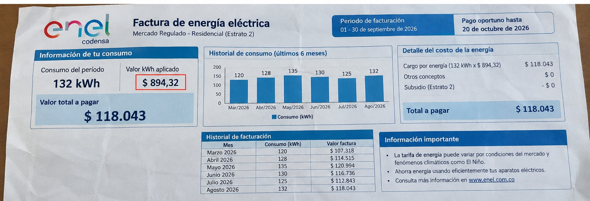

Factura de energía de mi hogar
Fotografía de la factura

Historial de consumo
| Mes | Consumo (kWh) | Valor pagado (COP) |
|---|---|---|
| Julio 2026 | 48 | $36.000 |
| Agosto 2026 | 52 | $39.000 |
| Septiembre 2026 | 50 | $37.500 |
| Promedio mensual | 50 | $37.500 |
Comparación entre proyección y factura
La proyección mensual se obtiene a partir del consumo semanal de la tabla de equipos, multiplicado por 30/7: 7,36 kWh/semana × 30/7 ≈ 31,54 kWh/mes. Frente a los 50 kWh que promedia la factura, hay una diferencia cercana a 18,5 kWh que corresponde al consumo no inventariado.
Esa diferencia se explica por equipos que no se incluyeron en la tabla, por los ciclos de funcionamiento (por ejemplo, el compresor de la nevera que enciende y apaga varias veces al día), por variaciones en los hábitos y por el número de días facturados en cada periodo. La fórmula general para dimensionarla es: diferencia = consumo facturado − proyección mensual.
Recomendaciones
- Priorizar la nevera: al ser el equipo de mayor consumo, conviene mantener el sello de la puerta en buen estado, no sobrecargarla y evitar abrirla de forma innecesaria.
- Reducir las horas del televisor y el ventilador cuando no hay nadie en la habitación, y recalcular el ahorro con las horas que efectivamente se eliminen.
- Aprovechar la luz natural y usar bombillos LED para disminuir el consumo de iluminación durante el día.
- Comparar cada mes los kWh facturados y no solo el valor en pesos, porque la tarifa puede variar entre periodos.